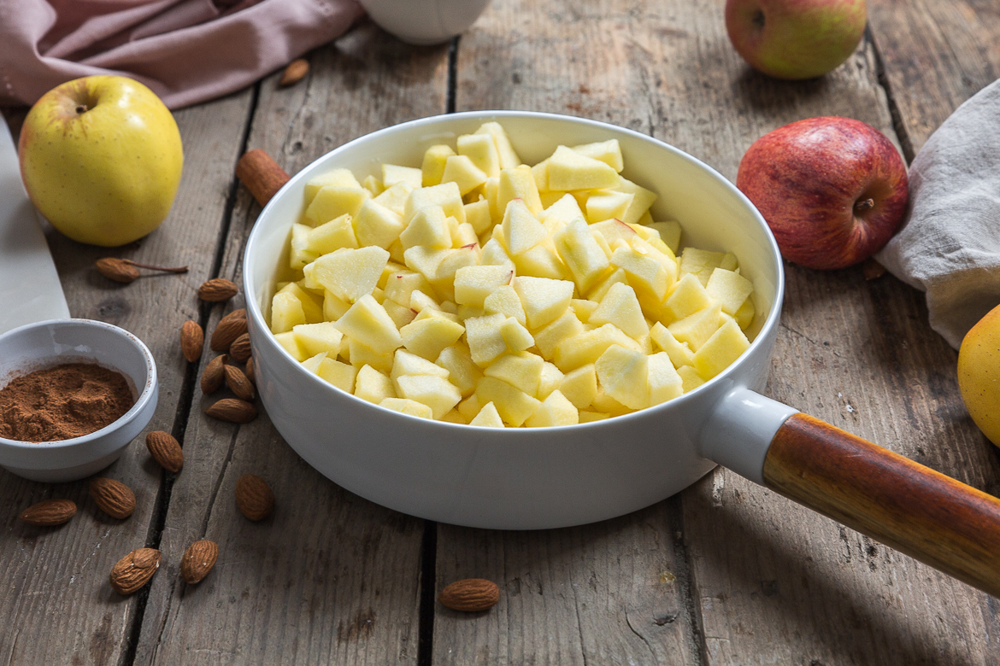
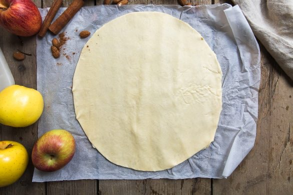
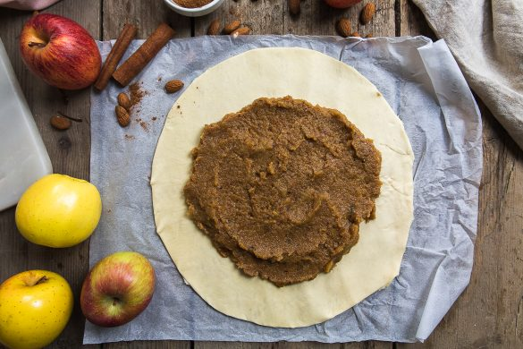
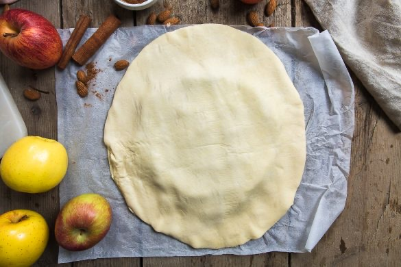
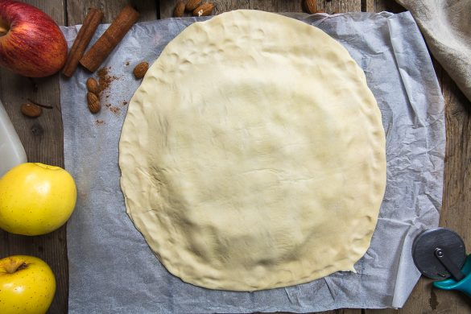
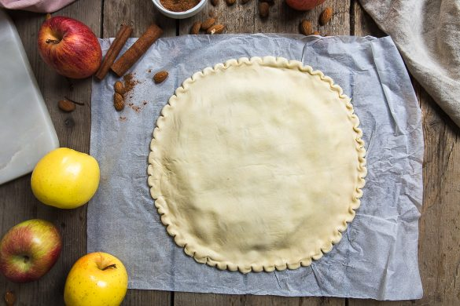
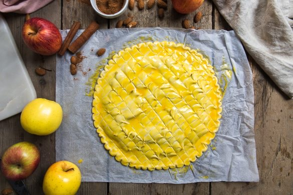

Galette des rois à la pomme

Si je ne me trompe pas, dimanche 8 janvier devrait être placé sous le signe de la galette car c’est ce jour que sera célébré l’épiphanie! Évidemment, je n’ai pas pu m’empêcher de faire une galette pour l’occasion et j’ai choisi de vous parler d’une galette des rois à la pomme plutôt que la traditionnelle frangipane.
Après les mini galettes à l’amande et à la mangue, je vous retrouve donc aujourd’hui avec une nouvelle recette de galette mais cette fois-ci il s’agit d’une galette à la pomme! Personnellement, depuis que je suis toute petite, je préfère la galette de rois briochée que l’on peut tremper dans son chocolat le dimanche matin et je l’aime encore plus si elle est parfumée à la fleur d’oranger (je devrais faire une recette d’ailleurs^^). Mon gros problème, depuis toujours est que tout mon entourage que ce soit ma famille ou mes amis préfèrent tous de loin la frangipane!! Moi je la trouve un peu trop grasse et après un gros repas je n’en ai généralement pas trop envie. Je prefere ce type de galettes au goûter par exemple car on a déjà un peu digéré. Quoi qu’il en soit des galette à la frangipane je suis « obligée » d’en faire si je veux éviter une guerre, une rupture ou quelque chose d’encore plus violent (sisi je vous assure il en demande même à son anniversaire^^). J’étais donc partie pour faire la recette de la galette à la frangipane et surtout enfin la partager puis je me suis lancée dans une tout autre recette et dans laquelle il n’y a pas de beurre mais une compote de pommes maison à la place. Je sentais déjà les regards noirs et la foudre s’abattre sur moi ce soir là mais j’ai quand même pris le risque et finalement je pense qu’il aime les deux presque tout autant maintenant ;). Si vous me demandez, moi je préfère celle-ci que je trouve vraiment vraiment délicieuse, pas lourde du tout et même en dessert ça passe tout seul (j’en ai pris deux parts^^). Dans cette recette, j’ai mis de la cannelle (autre vice de Mr) mais je sais que beaucoup n’aime pas particulièrement ça alors n’hésitez pas à remplacer la cannelle par de la vanille par exemple ou alors ne mettez rien à la place et vous aurez seulement le bon goût de la pomme et des amandes. Je vous laisse découvrir la recette plus bas (vous verrez là encore le gros avantage par rapport à une frangipane c’est que la recette est très facile et plutôt rapide!). J’ai « encore » oublié de mettre une fève mais ça ce sera pour dimanche (et là il y aura je pense à la fois brioche et frangipane!!). J’espère que cette recette vous plaira! A très vite avec un nouvel article 🙂
Ingrédients
- Pâtes feuillettées de qualité - 2
- Amandes en poudre - 70g
- Sucre semoule - 35g
- Cassonnade (ou sucre muscovado si vous avez) - 20g
- Pommes - environ 5 pommes pour obtenir 520g de compote)
- Vanille en poudre - 1/2 càc ou 1 sachet de sucre vanillé
- Cannelle - 1 à 2 càc selon vos goûts
- Eau - 50-60ml
- Oeuf - 1 jaune ou un peu de lait
Instructions
- Peler, épiner et nettoyer vos pommes (il faut environ entre 500 et 525g de pommes pelées et épépinées)
- Couper vos pommes en petits morceaux
- Mettre les pommes et 1càc de cannelle dans une grande poêle ou casserole avec un petit peu d'eau (50-60ml) et cuire à feu très doux à couvert pendant 25 minutes (environ)
- Remuer régulièrement pour éviter que les pommes accrochent au fond de la casserole pendant la cuisson
- Hors du feu ajouter la poudre d’amande, les sucres, la vanille
- Rajouter 1 càc de cannelle si nécessaire
- Mélanger
- Mettre dans le mixeur et mixer à peine 20-30 secondes pour obtenir un mélange lisse et homogène
- Sortir vos pâtes feuilletées du frais
- Dérouler la première pâte et étaler votre préparation au centre
- Attention à laisser environ 3cm sur les bords
- Mouillez les rebords avec un peu d'eau
- Déposer par dessus votre deuxième pâte feuilletée
- Sceller bien les deux pâtes avec vos doigts puis retailler la pâte pour qu'elle est une belle forme
- Faire des petits motifs autour de la pâte à l'aide d'un couteau
- Badigeonner de jaune d’œufs
- Faire des motifs sur la galette avec un couteau à pointe fine
- Placer au frais une heure
- Préchauffer le four à 200°
- Enfourner pendant 20 minutes
- Déguster chaud, tiède ou froid avec un thé ou un chocolat c'est divin







Les tips de la communauté
Bien accueillie comme alternative plus légère aux galettes traditionnelles à la frangipane. Testeurs apprécient l'approche moins grasse tout en restant gourmande. Recette validée pour ceux qui cherchent une version moins lourde des Rois.
Astuces
- Excellente alternative plus légère à la frangipane traditionnelle
- Pommes se marient très bien avec le beurre de la pâte
- Sucre peut être réduit selon les goûts personnels
- Crème à l'amande contient toujours du beurre, cette version l'évite
- Réussissable et gourmande malgré le côté plus léger
Variantes suggérées
- Réduire la quantité de sucre selon préférences
- Adapter les fruits selon les saisons disponibles
Ajustements signalés
- que je regarde où est sa boutique